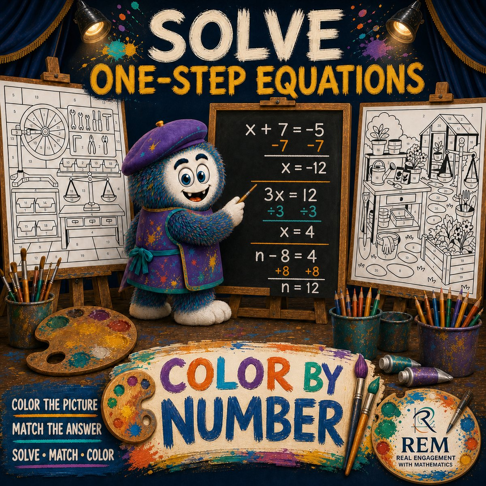

Curriculum systems design
Scalable Algebra 1 Curriculum Architecture
A reusable lesson and practice-system architecture—Activate through Extend—that organizes Algebra 1 learning into consistent instructional templates, visual design systems, and asset sequences teachers can deliver at scale.
Overview
This case study documents curriculum systems design work embodied in Real Engagement with Mathematics (REM)—not as a marketplace listing, but as an instructional architecture: a repeatable lesson engine, shared visual language, and families of practice assets that keep pedagogy consistent while content topics change.
The core lesson architecture moves learners through Activate → Model → Guide → Apply → Reflect → Extend. Around that spine sit reusable practice formats—Punchline Math, Color By Number, Scavenger Hunt, and Error Analysis Detective—treated here as instructional asset systems and visual design systems: templates with rules for difficulty progression, feedback, and classroom logistics.
Challenge
Algebra 1 programs often accumulate disconnected worksheets and one-off lessons. Teachers then rebuild structure every week: how to open, how to model, how much guided practice, when to check for understanding, and how to extend for students who finish early—or need another on-ramp.
The design problem was to create a scalable curriculum architecture: shared lesson phases, predictable asset types, and cover/page systems that reduce design friction while preserving mathematical rigor and standards alignment.
Audience
- Secondary Algebra 1 teachers implementing a coherent unit sequence
- Intervention and intensive settings that need structured practice without lowering cognitive demand indiscriminately
- Curriculum leads who need templates that travel across topics and classrooms
My role
- Defined the Activate–Extend lesson architecture
- Designed reusable practice-system templates and visual conventions
- Mapped content into coherent sequences and dependencies
- Produced student pages, teacher keys, and cover systems as system exemplars
- Aligned activities to Algebra 1 learning goals and classroom constraints
Constraints
- Must be teachable in real secondary class periods
- Print- and LMS-friendly distribution without custom software
- Visual system must stay professional and consistent across asset types
- Templates must support many Algebra 1 topics without rewriting the pedagogy each time
Artifacts — architecture first
Real REM pages as instructional design evidence, organized the way the system is organized: course map, then each practice engine as a student page paired with its worked teacher key.

Punchline Math — self-checking practice


Color By Number — visual self-verification


Scavenger Hunt — movement with accountability


More engines in the same architecture


Visual design system
Each asset family carries a branded cover system — consistent title hierarchy, format promise, and the REM mark — so a teacher can identify format and skill in one glance. Shown as document/visual design evidence.




Lesson flow in motion
Short-form modeling video from the REM system, plus numbered frames showing how assets sequence in a lesson: architecture → model → formative check → collaborative apply. A full frame-by-frame walkthrough lives on the home page.

Design process
-
Analyze classroom workflow
From lead-teaching and mentoring experience, identified where lessons failed: weak activation, modeling that skipped thinking, practice without reflection, and no planned extension or re-teaching path.
-
Architect the lesson engine
Specified Activate / Model / Guide / Apply / Reflect / Extend as fixed phases with distinct instructional jobs—mirroring gradual release while leaving room for topic-specific mathematics.
-
Design asset systems
Built repeatable formats (Punchline Math, Color By Number, Scavenger Hunt, Error Analysis Detective) as templates: same interaction grammar, swapped content, consistent teacher keys and covers.
-
Systematize visual & document design
Established cover systems, student-page layouts, and answer-key patterns so a new topic inherits navigation, hierarchy, and production quality from the system—not ad hoc formatting.
Design decisions
- Phase-based lesson architecture over topic silos Teachers learn one instructional rhythm; content authors fill the slots. Scales better than reinventing lesson flow per worksheet.
- Practice formats as systems, not one-offs Punchline, Color By Number, Scavenger Hunt, and Error Analysis Detective each encode a learning interaction (self-checking, visual reinforcement, movement with accountability, misconception analysis)—reusable across standards.
- Error Analysis Detective as formative design Positions mistakes as objects of study—supporting diagnostic thinking rather than only correct/incorrect scoring.
- Extend as a first-class phase Prevents “early finishers get busywork” by designing intentional enrichment or transfer tasks inside the same architecture.
Solution
REM’s Algebra 1 curriculum architecture packages:
- Lesson engine: Activate → Model → Guide → Apply → Reflect → Extend
- Practice asset systems: Punchline Math, Color By Number, Scavenger Hunt, Error Analysis Detective—each with student pages and teacher keys
- Document / visual design system: covers, page hierarchy, and production conventions that keep materials coherent across a course
- Curriculum map thinking: topic sequences and dependencies that show how assets hang on the architecture, not as isolated downloads
Framed for portfolio review, this is curriculum systems and instructional design work: templates, sequencing, learner experience, and scalable production—not a commercial shop front.
Tools
Learning principles applied
Gradual Release (GRR)
Model → Guide → Apply mirrors I do / we do / you do inside a named curriculum engine.
Dick & Carey / ADDIE discipline
Objectives, instructional strategy, and materials treated as a system that can be revised as a unit.
UDL-minded options
Multiple practice formats offer varied paths to engagement and expression without abandoning shared objectives.
Cognitive apprenticeship
Error Analysis Detective makes expert noticing of misconceptions visible to learners.
Outcome
The architecture yields a coherent Algebra 1 instructional system: teachers and designers inherit lesson phases and asset templates instead of starting from a blank page. New topics can be authored into the same engines, preserving pedagogy and visual consistency.
Evidence for hiring review is the system design itself—lesson architecture, reusable practice engines, and artifact types shown here—not sales or download metrics.
Reflection
Building REM forced an instructional designer’s question: what must stay constant so quality scales? The answer was the lesson engine and asset grammars—not any single activity. Framing those materials as curriculum architecture (rather than isolated classroom handouts) is how this portfolio communicates transferable ID skill: systems thinking, template design, and learner experience across a course.